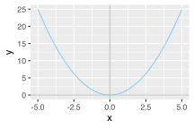
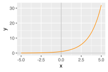
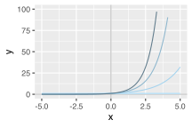
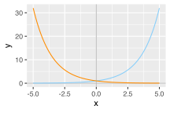
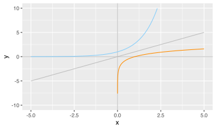
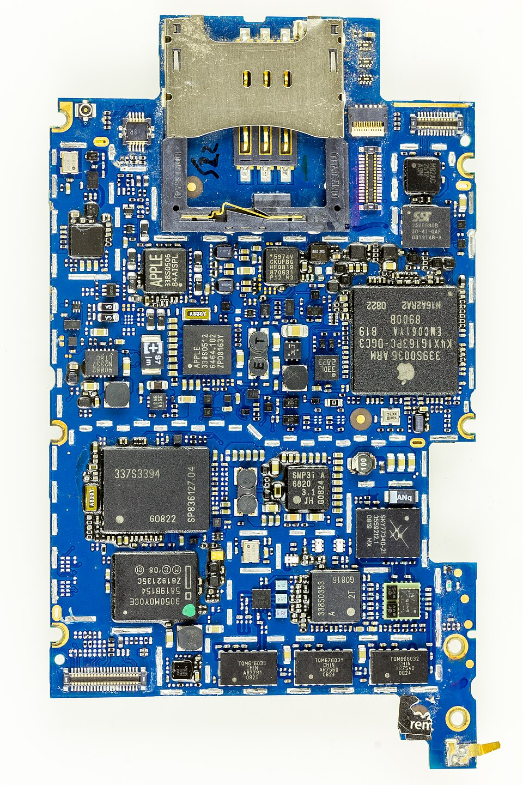
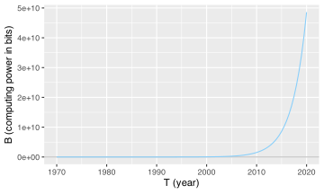
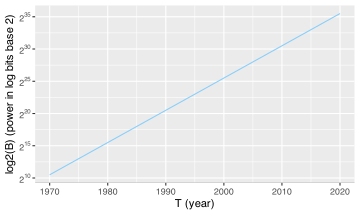
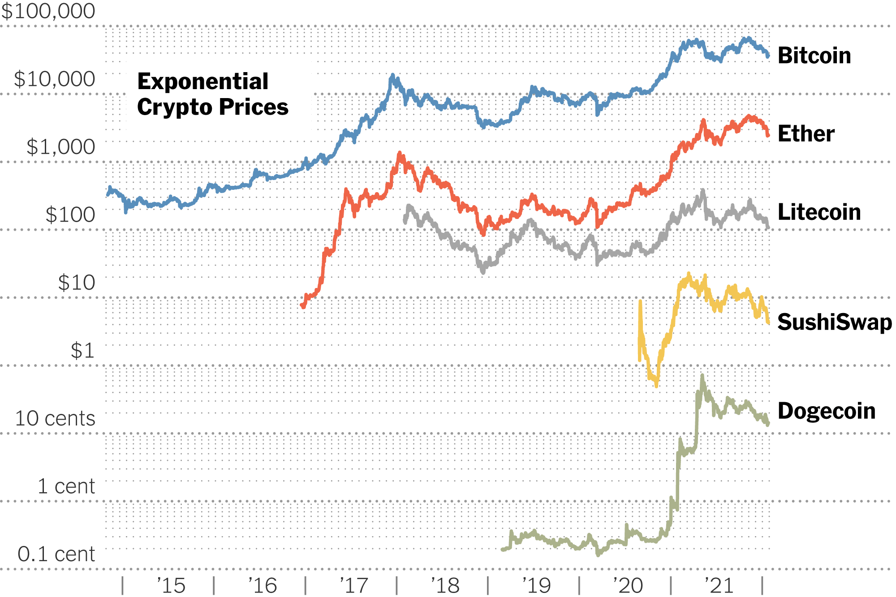

library(ggplot2)
base_axes <- ggplot(data.frame(x=c(-5, 5)), aes(x=x)) +
# add axis lines to help guide plots
geom_vline(xintercept=0, colour="grey") +
geom_hline(yintercept=0, colour="grey")Exponentials & Logs
Lecture 2 - FNDN07012
Powers Recap
Index Laws
Recall for \(x\in\mathbb{R}\) and \(n,m\in\mathbb{Z}\) we define \[ x^n = \underbrace{x\times x\times\cdots\times x}_{n~\text{times}},\qquad x^{-n}=\frac{1}{x^n}. \]
Given those definitions, the index laws are: \[ x^m \times x^n = x^{m+n}, \qquad {(x^m)}^n = x^{m\times n}, \] \[ \frac{x^m}{x^n} = x^{m-n}, \qquad x^{0} = 1\ \text{(if $x\neq0$)}. \]
The index laws can be used to find similar \(n^{\text{th}}\) root laws: \[ x^{\frac{1}{n}} = \sqrt[n]{x}, \qquad \sqrt[n]{xy} = \sqrt[n]{x}\times\sqrt[n]{y}, \qquad \sqrt[n]{\frac{x}{y}} = \frac{\sqrt[n]{x}}{\sqrt[n]{y}}. \]
None of this should be new, though it might be the first time you’ve seen it written out as a concrete set of algebraic “laws”.
Polynomials
These laws lets us build and work with polynomials of the form \[ y = a_nx^n + a_{n-1}x^{n-1} + \cdots + a_2x^2 + a_1x + a_0 \] where each \(a_m\in\mathbb{R}\) is a coefficient and each \(x^{m}\) is a power of \(x\).
What if rather than \(y = x^b\), we had \(y = b^x\)?
base_axes + stat_function(fun=function(x){x**2}, colour="lightskyblue")
base_axes + stat_function(fun=function(x){2**x}, colour="darkorange")

Exponentials
An exponential equation one of the form \(y = b^x\), \(b\in\mathbb{R}\).
base_axes +
stat_function(fun=function(x){1**x}, colour="lightskyblue1") +
stat_function(fun=function(x){2**x}, colour="lightskyblue2") +
stat_function(fun=function(x){3**x}, colour="lightskyblue3") +
stat_function(fun=function(x){4**x}, colour="lightskyblue4") +
ylim(0, 100)
base_axes +
stat_function(fun=function(x){2**x}, colour="lightskyblue") +
stat_function(fun=function(x){0.5**x}, colour="darkorange")Warning: Removed 9 rows containing missing values or values outside the scale range
(`geom_function()`).Warning: Removed 17 rows containing missing values or values outside the scale range
(`geom_function()`).

We can still use our nice index laws: \[ a^xb^x = (ab)^x, \qquad b^x \times b^y = b^{x+y}, \qquad {(b^x)}^y = b^{xy}, \qquad \frac{b^x}{b^y} = b^{x-y}. \]
When applying index laws with exponentials (and in general), do make sure you aren’t confusing what is the ‘base’ and what is the ‘power’.
Logs
The exponential operation \(b = a^n\) has two inverses depending whether want \(a\) or \(n\):
- the root gives \(a = \sqrt[n]{b}\),
- the logarithm gives \(n = \log_{a}(b)\).
As we had root laws, we have equivalent log laws.
| Index Rule | Log Law |
|---|---|
| \(a^m \times a^n = a^{m+n}\) | \(\log_{a}(mn) = \log_a(m) + \log_a(n)\) |
| \({(a^m)}^n = a^{m\times n}\) | \(\log_{a}{\left(m^n\right)} = n\times\log_{a}(m)\) |
| \(\frac{a^m}{a^n} = a^{m-n}\) | \(\log_{a}{\left(\frac{m}{n}\right)} = \log_{a}(m) - \log_{a}(n)\) |
| \(a^0 = 1\) | \(\log_{a}(1) = 1\) |
| \(a^{-n} = \frac{1}{a^m}\) | \(\log_{a}\left(\frac{1}{n}\right) = -\log_{a}(n)\) |
Standard Base
The standard exponential is \(y = e^x\), where \(e\) is Euler’s number (\(e\approx2.72\)).
base_axes +
stat_function(fun=function(x){x}, colour="grey") +
stat_function(fun=function(x){exp(x)}, colour="lightskyblue") +
stat_function(fun=function(x){log(x)}, n=1e4, colour="darkorange") +
ylim(-10,10)
Inverting this gives \(x = \ln(y)\), where \(\ln\) is the natural log \(\log_{e}\).
Modelling
General Model
The general exponential model has the form is \[ y = a\times e^{b(x-c)} + d. \]
Here \(x\) and \(y\) are variables, while \(a,b,c,d\in\mathbb{R}\) are parameters to tune.
knitr::include_url("https://www.geogebra.org/material/iframe/id/xdehvxe5/width/1800/height/800/sri/true/sdz/true")- \(a\) controls vertical stretch by a factor of \(a\),
- \(b\) controls horizontal stretch by a factor of \(\frac{1}{b}\),
- \(c\) controls horizontal translation by \(c\) units,
- \(d\) controls vertical translation by \(d\) units.
Logistic Model
Building on this is the logistic model, which has the form is \[ y = \frac{1}{1 + e^{-(a+bx)}}. \]
Here \(x\) and \(y\) are variables, while \(a,b\in\mathbb{R}\) are parameters to tune.1
knitr::include_url("https://www.geogebra.org/material/iframe/id/kvvgr3xy/width/1800/height/600/sri/true/sdz/true")This is not essential content, and can be briefly skipped over or explored in detail as time allows!
Graphing
What’s the connection?
.png){kind=link}

{kind=link}
Moore’s Law
Complexity for minimum component costs has increased at a rate of roughly a factor of two per year. Certainly over the short term this rate can be expected to continue.2
If we start with 1 and then repeatedly double, it will follow the trend
2**(0:12) [1] 1 2 4 8 16 32 64 128 256 512 1024 2048 4096and at the \(n^{\text{th}}\) step we will have \(2^n\). Moore’s law can be modelled as
\[ B(T) = 2^\frac{T - 1949}{2}, \]
where computing power \(B\) in bits is a function of \(T\) the current year.
In 1965, engineer Gordon Moore noticed that the number of transistors it was possible to put on a computer circuit board was increasing roughly every two years (Moore, 1965).
oh no
What’s the problem when we plot this?
moores_plot <-ggplot(data.frame(x=c(1970, 2020)), aes(x=x)) +
geom_hline(yintercept=0, colour="grey") +
stat_function(fun=function(x){2**((x-1949)/2)}, col="lightskyblue")
moores_plot + labs(x="T (year)", y="B (computing power in bits)")
log axes
To keep interpretability, we transform the plot!
library(scales)
moores_plot + scale_y_continuous(
trans='log2',
breaks=trans_breaks('log2', function(x) 2^x),
labels=trans_format('log2', math_format(2^.x))
) + labs(x="T (year)", y="log2(B) (power in log bits base 2)")Warning in scale_y_continuous(trans = "log2", breaks = trans_breaks("log2", :
log-2 transformation introduced infinite values.
In Practice

{kind=link}
Caution

Students should note that log scales showcase relative growth, which makes comparing multiple series difficult. Dogecoin had the sharpest increase, but Bitcoin gained massively more overall.